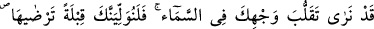

144. (Ey Muhammed!) Biz senin yüzünün göğe doğru çevrilmekte olduğunu
(yücelerden haber beklediğini) görüyoruz. İşte şimdi, seni memnûn olacağın bir
kıbleye döndürüyoruz. Artık yüzünü Mescid-i Haram tarafına çevir. (Ey
müslümanlar!) Siz de nerede olursanız olun, (namazda) yüzlerinizi o tarafa
çevirin. Şüphe yok ki, ehl-i kitap, onun Rablerinden gelen gerçek olduğunu çok iyi
bilirler. Allah onların yapmakta olduklarından habersiz değildir.
“Ey Rasûlüm, Kâbe’nin kıble olması için vahiy gelmesi ümidiyle yüzünü göğe
doğru çevirdiğini çokça müşâhede ettik.” Hz. Peygamber (a.s.), Rabbinden Kâbe’yi
kıble yapmasını bekliyordu. Çünkü Kâbe, dedesi İbrâhîm (a.s.)’in kıblesiydi. İki
kıblenin daha eski olanıydı. Arapları îmâna dâvet etme bakımından Kâbe’nin kıble
olmasının daha çok faydası vardı. Çünkü burası Arapların çokça ziyârette bulunup tavâf
ettikleri emniyetli ve övünç kaynağı bir yerdi. Ayrıca Hz. Peygamber (s.a.) Yahûdîler’in
kıblesinden ayrılmak istiyordu. Çünkü Yahûdîler şöyle diyorlardı: “Muhammed (a.s.)
dînimize karşı geliyor, sonra da bizim kıblemize tâbi oluyor. Eğer biz olmasak ne tarafa
yöneleceğini bilemezdi.” Bu sebeple Peygamberimiz, onların kıblesine yönelmekten
hoşlanmıyordu.
Hatta rivâyet edildiğine göre Hz. Peygamber (s.a.) Cebrâîl (a.s.)’a: “Allah’ın beni
Yahûdîler’in kıblesinden başka bir yöne çevirmesini istiyorum.” dedi.[34] Cebrâîl
(a.s.) ona: “Ben de senin gibi bir kulum. Üstelik senin Allah’a nazın daha çok geçer.
O’na duâ et, bunu O’ndan iste!” dedi. Sonra Cebrâîl (a.s.) göğe yükseldi. Hz.
Peygamber, Cebrâîl’in, Rabbinden istediği hükmü indirmesi ümidiyle ikide bir semâya
doğru bakmaya başladı. Nihâyet Allah Teâlâ, bu âyeti indirdi.
Neshedilen şeylerin ilki, elli vakit namazdır. O neshedilmiş, beş vakte indirilmiştir.
Sonra kıblenin Beyt-i Makdis’e değiştirilmesidir. Mekke’de müşrikleri imtihan için
önce Beyt-i Makdis, kıble yapılmıştır. Halbuki daha önce: “Her nereye dönerseniz
Allah’ın zâtı oradadır.” âyetine istinâden namaz kılan kişi, istediği tarafa
yönelebiliyordu. Daha sonra Medîne’de, bu kez Yahûdîler’i denemek için kıble, Beyt-i
Makdis’ten Kâbe’ye çevrildi. Molla Fenârî’nin Tefsîru’l-Fâtiha’sında böyle
denilmektedir.
“Biz seni hemen hoşlanacağın bir kıbleye döndüreceğiz.” bölümünde geçen
“hoşlanma”, muhabbet ve iştiyâktan mecâzdır. Çünkü Hz. Peygamber (a.s.), Beyt-i
Makdis’e doğru yönelmeye kızmıyor ve ona yönelmeyi çirkin görmüyordu. Hatta o, buna